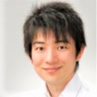

K2 会長
高島浩二 先生

K2 会長
たかしま こうじ
- 職種
- 歯科医師
- 所属
- 医療法人社団TDO ほんごう歯科診療室（院長） ↗
- 地域
- 富山県魚津市
歯冠補綴を専門分野に、富山県魚津市のほんごう歯科診療室で診療にあたる。東京SJCD・JIADSで学び、K2 会長、K.I.M 理事を務める。
ハンズオンコース講師：全顎的なセットアップ方法
経歴CAREER
- 2005新潟大学歯学部 卒業
- 2005皆川歯科クリニック 勤務
- 2007NAMBA DENTAL OFFICE 勤務
- 2013ほんごう歯科診療室 開設（富山県魚津市）
役職・所属学会AFFILIATIONS
役職
- K2 会長
- K.I.M 理事
- 日本臨床歯科学会 東京支部 広報委員会
所属学会
- 日本臨床歯科学会（東京SJCD）（専門医）
- 日本補綴歯科学会（専門医）
- 日本審美歯科学会（認定医）
- 日本顎咬合学会（認定医）
- JIADS
著書・講演・受賞などACTIVITIES
- 論文「光学印象を用いたワンディトリートメントの現在」（QDT、2008年）。
- 講演：奥羽大学歯学部 歯科補綴学第二講座「咬合回復を行い、ゴールを見据えた治療の流れ」（2010年）、磁性アタッチメントインプラント学会（2012年）、市民フォーラム「口腔内からアンチエイジングを考える」（富山、2013年）。
医療法人社団TDO ほんごう歯科診療室についてCLINIC
一般歯科・小児歯科・矯正歯科・歯科口腔外科を行い、インプラントや審美補綴、GBT（ガイデッド・バイオフィルム・セラピー）による予防ケアにも対応している。
- 患者の話を丁寧に聞き、納得してもらったうえで治療を始める
- 大切な歯を扱うため、時間をかけてゆっくり治療することを心がけている
- インプラントの精密検査に歯科用CTを用いている
掲載情報の出典
経歴は所属先の公式サイトなど公開情報をもとに掲載しています。